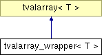

tvalarray_wrapper< T > Class Template Reference
Array wrapper class that uses the specified low level array instead of allocating data.
More...
#include <tvalarray.h>
_map" border="0" alt="">
List of all members.
|
Public Member Functions |
| | tvalarray_wrapper (T *array, unsigned n) |
| | Create an array using the specified low level array.
|
Detailed Description
template<class T>
class tvalarray_wrapper< T >
Array wrapper class that uses the specified low level array instead of allocating data.
- Version:
- 0.5, 02/11/2007
- Author:
- Peter Csizmadia (2007)
Constructor & Destructor Documentation
Create an array using the specified low level array.
The documentation for this class was generated from the following file: